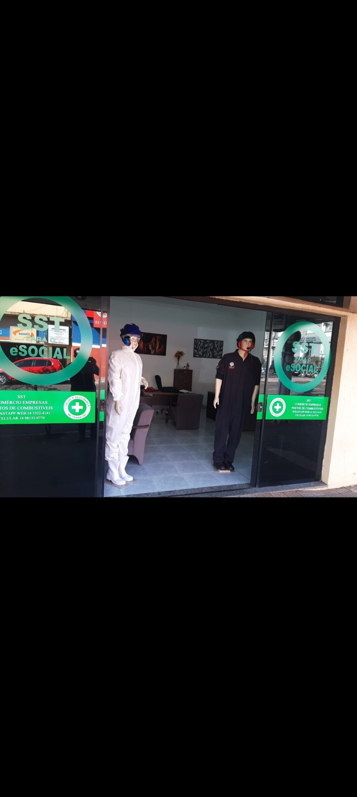
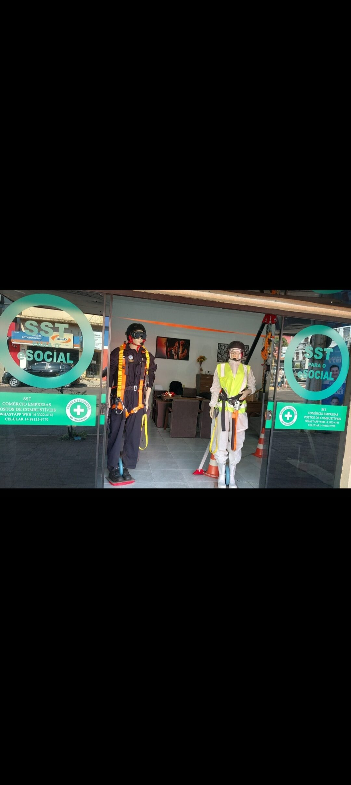

A GLOBALLED SST oferece uma gestão completa em Saúde e Segurança do Trabalho, com foco na conformidade legal, prevenção de riscos e bem-estar dos colaboradores.
- 📤 Transmissão para o eSocial (S-2210, S-2220 e S-2240) com conferência e rastreabilidade técnica.
- 📋 Elaboração, revisão e atualização de PGR, PCMSO, LTCAT e PPP.
- 🩺 Gestão de exames ocupacionais: Admissional, Periódico, Retorno, Mudança de Função e Demissional.
- 🏗️ Implantação e ampliação de SESMT conforme NR-4, incluindo dimensionamento, elaboração e acompanhamento técnico.
- ⚙️ Consultoria técnica em NRs e suporte completo na adequação às normas do Ministério do Trabalho.
- 🎓 Treinamentos e capacitações (NR-6, NR-33, NR-35 e outros), com práticas reais e equipamentos homologados.
Atendimento especializado em todo o Brasil, com engenharia, medicina e segurança do trabalho integradas — oferecendo soluções que unem tecnologia, conformidade e prevenção.
Endereço: Rua dos Expedicionários, 195 — Ourinhos/SP · Contato: (14) 3322-4141 (WhatsApp)Serviços em Destaque
Atendimento técnico especializado para empresas que precisam de organização, conformidade legal e suporte completo em Saúde e Segurança do Trabalho.
eSocial SST
Envio, conferência e acompanhamento técnico dos eventos S-2210, S-2220 e S-2240.
PGR, PCMSO, LTCAT e PPP
Elaboração, revisão e atualização da documentação obrigatória da empresa.
Exames Ocupacionais
Gestão de exames admissionais, periódicos, retorno ao trabalho, mudança de função e demissionais.
Consultoria em NRs
Suporte técnico para adequação às normas regulamentadoras e prevenção de riscos.
Atendimento Rápido
Pré-Atendimento Inteligente
Preencha as informações abaixo e envie direto pelo WhatsApp. Assim o atendimento fica mais rápido e mais organizado.
Dúvidas Frequentes
Minha empresa precisa ter PGR?
Em muitos casos, sim. O PGR é parte essencial da gestão de riscos ocupacionais e deve estar compatível com a realidade da empresa.
Vocês auxiliam com eSocial SST?
Sim. Fazemos conferência, suporte e orientação técnica sobre os eventos relacionados à SST.
Atendem somente Ourinhos?
O atendimento pode ser ajustado conforme a necessidade da empresa. O ideal é entrar em contato para analisar seu caso.
Posso solicitar orçamento pelo site?
Sim. Você pode chamar direto no WhatsApp ou preencher o pré-atendimento para agilizar a análise.
Estrutura e Fotos

